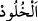

ağaçlardan dikti.[69]
“__WORD__ (ebedîlik)”, bir şeyin bozulmaktan uzak olması ve olduğu hal üzere kalmasıdır.
Cennette olan ebedîlik, oradaki varlıkların hallerinde bir değişme ve bozulma olmadan
kalmaları demektir.
et-Te’vîlâtü’n-Necmiyye’de der ki: “Firdevs, kurb/yakınlık mertebelerinin en
yükseğidir. Kalbleri ölü olan kimselerden miras kalmıştır. Ona kalbleri diri olanlar
vâris olur.”
Molla Fenârî (r.h.)’ın Fâtiha Tefsîri’nde der ki: “Bilesin ki cennet üç çeşittir:
1- İhtisas-ı ilâhî cenneti. Oraya amel etme çağına (bülûğ) ulaşamayan çocuklar girer.
Onların sınırı doğup sesini yükseltmesinden altı yaşını bitirmesine kadardır. Allah,
kullarından dilediklerine ihtisas cennetlerinden dilediğini verir. Aklı olmayan
mecnunlar, ilmî tevhid ehli, fetret döneminde yaşayanlar ve kendilerine bir peygamberin
dâveti erişmeyen kimseler bu cennetin ehlidirler.
2- Miras cenneti. Zikrettiğimiz kimselerden ve mü’minlerden cennete giren herkes bu
cennete nâil olur. Bu cennet, cehennemlikler cennete girmiş olsalardı onlar için tâyin
edilmiş yerlerdi.
3- Ameller cenneti. Bu cennet insanların amelleri ile girecekleri cennettir. Kim çeşitli
üstünlük konularında başkasından daha üstün olursa cennetten ona daha fazlası verilir.
Bir konuda üstün olan kimsenin, kendisinden üstün olduğu kimsenin aşağısında olup
olmaması eşittir. Hiçbir amel yoktur ki mutlaka onun sâhipleri arasında üstünlük/fark
meydana gelen bir cenneti olmasın.
Nebî (a.s.)’dan rivâyet edilen sahih bir hadiste Efendimiz, Bilal (r.a.)’a şöyle
buyurdu: “Hangi amel ile cennete benden önce girdin? Orada nereye ayağımı bassam
senin ayak sesini/hışırtını önümde işittim.” Bilal (r.a.) şöyle cevap verdi: “Ey Allah’ın
Rasûlü! Abdestimi bozar bozmaz hemen abdest alırım. Abdest aldığımda da mutlaka iki
rekat namaz kılarım.” Bunun üzerine Efendimiz (s.a.): “İşte bu ikisiyle (cennete benden
önce varmışsın).” buyurdu.[70]
Bu hadisten o cennetin bahsedilen amele mahsus cennet olduğunu öğrenmiş olduk. Hiç
bir farz, nafile, hayırlı iş, bir haramı ya da bir mekruhu terk yoktur ki ona mahsus bir
cennet ve cennete girenlere özel nimetler olmasın. Sonra üstünlük mertebeleri
açıklanmıştır. Kim onu isterse orada taleb etsin. Onun zikrettiği âyette söylenene
uygundur. Onlar orada kâfirlerin ellerinden kaçırdıkları menzillerine/yerlerine vâris
olurlar. Çünkü Allah Teâlâ her insan için hem cennette hem de cehennemde bir
menzil/yer yaratmıştır. Nitekim Kâşifî şöyle der: “Mü’minlerin cehennemde olan
yerlerini kâfirlerin yerlerine, kâfirlerin cennetteki yerlerini de mü’minlerin menzillerine
eklerler. Zâdü’l-mesîr’de şöyle aktarılmaktadır: “Cennet ve makamları kâfirlerin gözü
önüne getirilir. Eğer iman etmiş olsaydınız bunlara nail olurdunuz denilir. Cennet ve
makamlarının onlara gösterilmesi, hasret ve özlemlerinin artması içindir.
Canana uzaktan bakmak, kâfire cenneti uzaktan göstermeye benzer. Bunun yangını